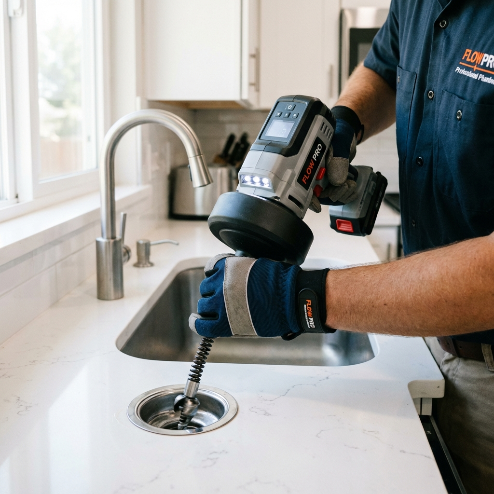

سرعة الاستجابة
نحن نعلم أن مشاكل الصرف لا تحتمل الانتظار، لذا نصلك في أسرع وقت في أي مكان بالأحساء.
خدمة فورية لجميع أحياء الأحساء - متاحون 24 ساعة

نحن نعلم أن مشاكل الصرف لا تحتمل الانتظار، لذا نصلك في أسرع وقت في أي مكان بالأحساء.

نستخدم أحدث سيارات الشفط وماكينات التسليك بالضغط لضمان حل المشكلة من جذورها.

نقدم أفضل الأسعار لخدمات تسليك المجاري بالأحساء مع ضمان الجودة.
تُعتبر مشكلة انسداد المجاري من أكثر المشكلات إزعاجاً لأي صاحب منزل أو منشأة، ولهذا السبب تسعى شركة جريان لتكون الرائدة في هذا المجال من خلال تقديم خدمات تسليك المجاري بالأحساء بأحدث الطرق والوسائل المتطورة. نحن لا نقوم فقط بتسليك الانسداد، بل نعمل على تنظيف المواسير بالكامل والتأكد من عدم تكرار المشكلة.
نحن في شركة جريان نقدم مجموعة متكاملة من الخدمات التي تضمن سلامة شبكة الصرف الصحي الخاصة بك:
للحفاظ على سلامة الصرف الصحي في منزلك، تنصحك شركة جريان باتباع الآتي:
فريقنا يصلك أينما كنت في الأحساء، حيث نخدم جميع الأحياء ومنها:
حي المبرز، حي الجلوية، حي الكوت، حي الصالحية، حي الخالدية، حي الرفعة، حي النعاثل، حي العمران، حي الطرف، حي القرين، حي الجشة، وكافة مناطق الهفوف والمبرز والأحساء.